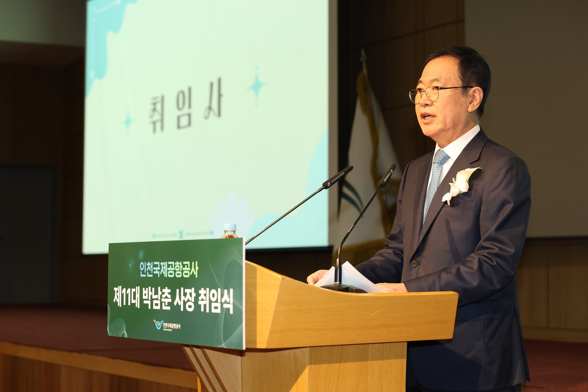
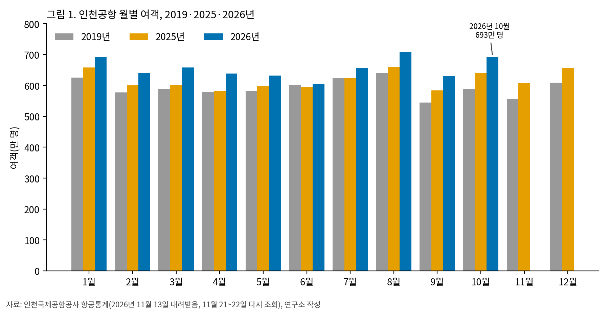
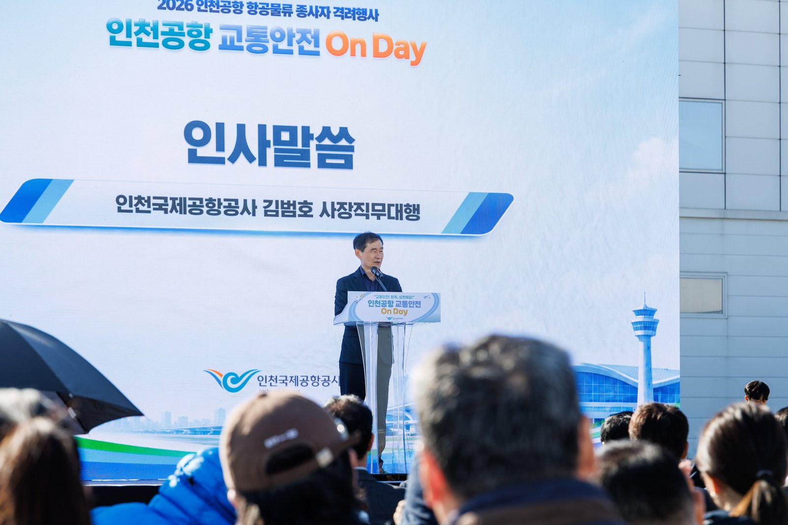
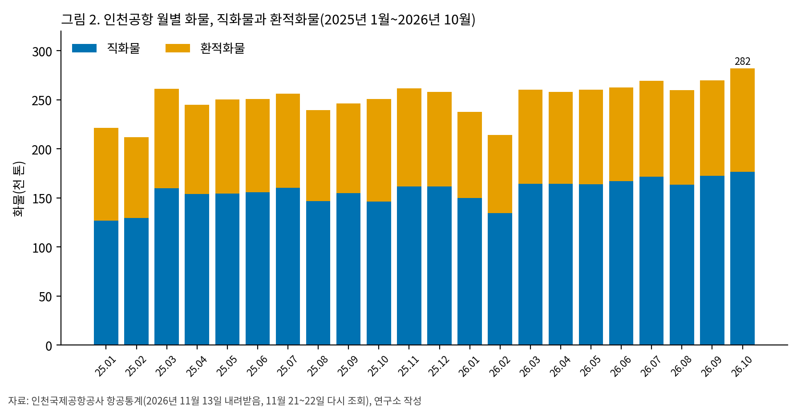
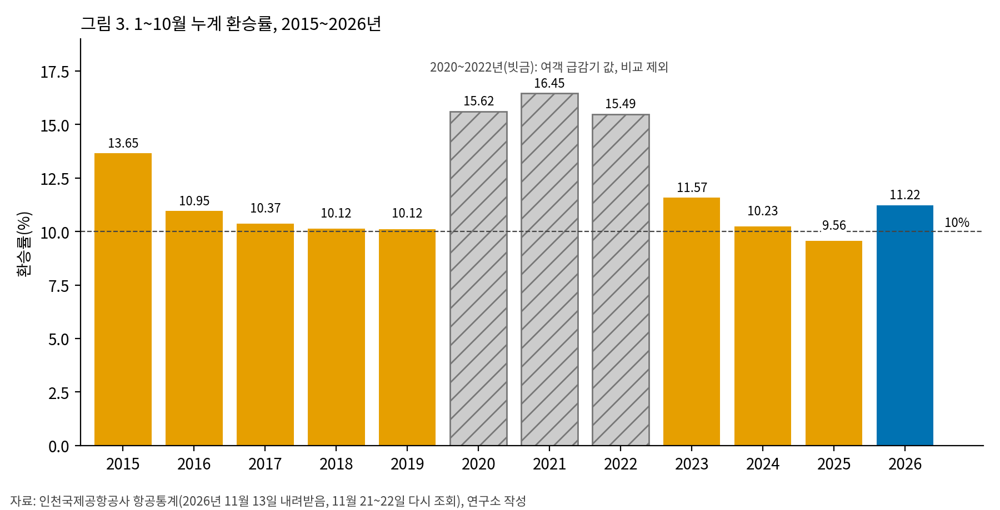
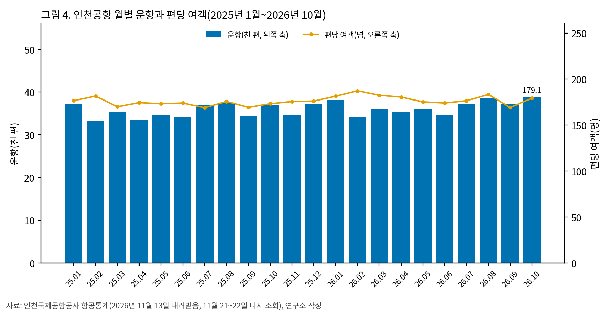
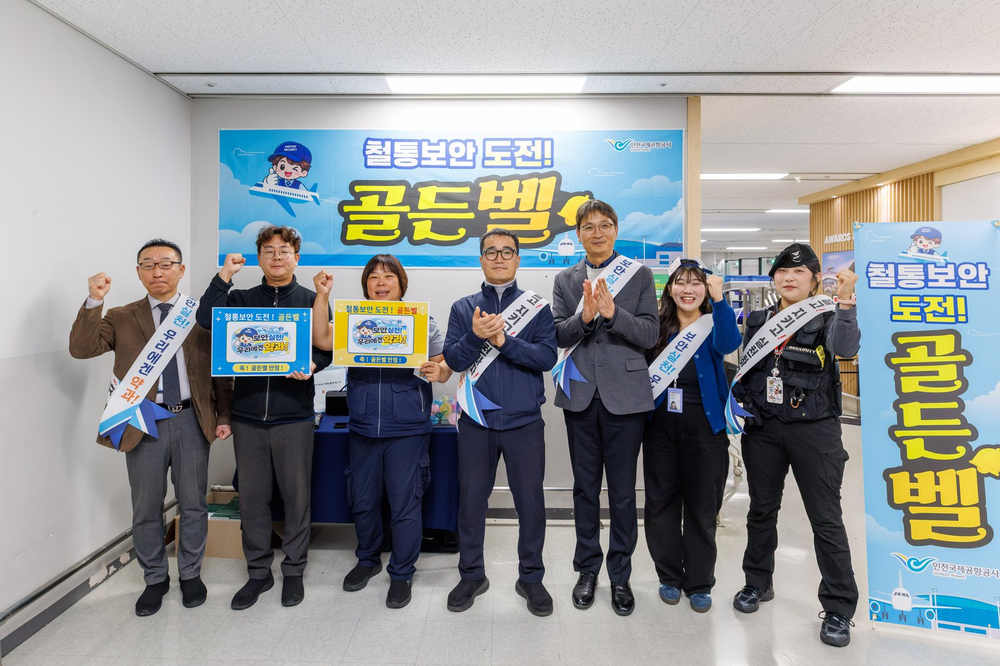
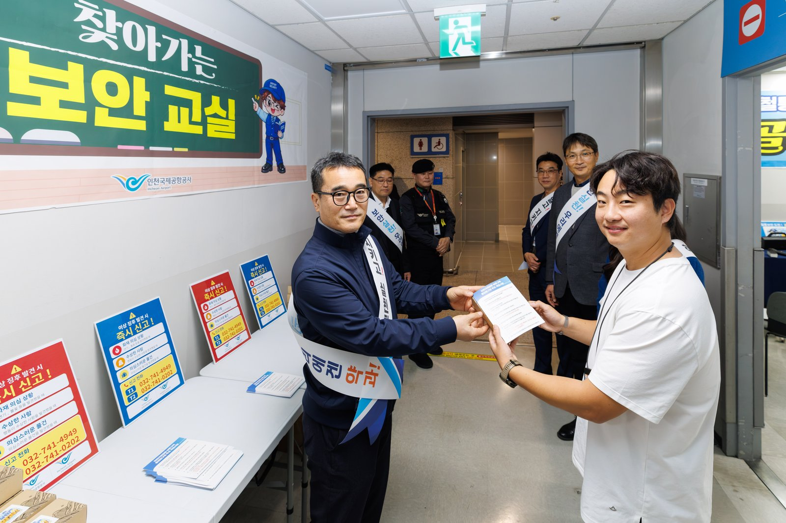
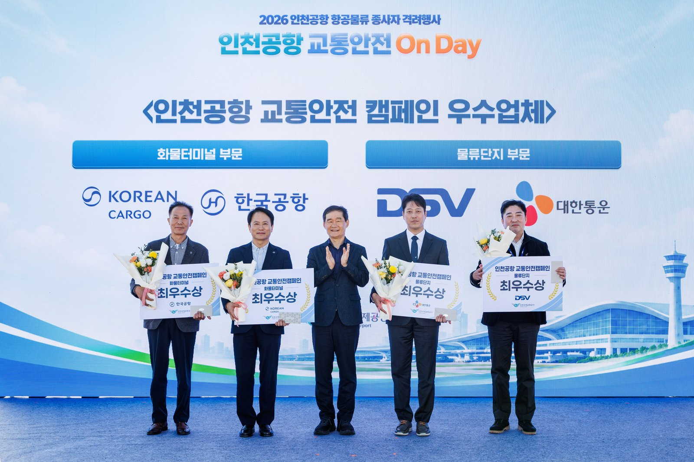

[항공 브리핑] 인천공항 10월 화물 28만톤, 증가분 대부분 직화물
환적 105,401톤, 올해 최대에도 0.7% 증가
누계 환승률 11.22%, 2019년보다 높아
새 사장 목표 9,000만명, 2025년 1.22배
요약
2026년 10월 인천국제공항 항공화물은 282,146톤으로 1년 전보다 12.4% 늘었다. 2021년 12월(288,712톤) 이후 가장 많은 양이다. 늘어난 31,175톤 가운데 30,428톤(97.6%)은 전체 화물에서 환적화물을 뺀 직화물이었다.
환적화물은 105,401톤으로 올해 들어 가장 많았지만 1년 전보다는 0.7% 늘었다. 1~10월 누계 환적화물은 946,045톤으로 전년 같은 기간과 거의 같았다. 화물기 운항은 4,458편으로 0.2% 늘었고, 우편물을 뺀 공사 직화물 항목 기준 화물기 직화물은 19.7% 늘었다.
같은 달 여객은 6,934,546명으로 8.5% 늘어 2010년 이후 월간 두 번째로 많았다. 1~10월 누계 환승률(환승승객÷여객)은 11.22%로 2019년 같은 기간 10.12%를 넘었다. 국토교통부 항공정보포털에서 공급석은 4.6% 늘었고, 같은 화면의 여객은 8.4% 늘어 좌석이 더 찼다.
11월 23일 취임한 박남춘 인천국제공항공사 사장은 임기 안에 연간여객 9,000만명을 달성하겠다는 목표를 내놨다. 2025년 실적 74,071,475명보다 21.5% 많은 규모다.
한 연구는 2024년 6월 운항 일정 기준 인천 허브 연결성이 하네다·베이징·푸둥·싱가포르보다 낮다고 분석했다. 대한항공·아시아나항공을 한 네트워크로 묶어 제2여객터미널에 함께 두면 크게 오른다는 결과도 냈다. 아시아나항공은 2026년 1월 제2여객터미널로 옮겼고, 2026년 12월 17일 출발편부터 아시아나항공 항공편은 대한항공이 운항한다.
(연구소 판단) 10월 화물 증가는 직화물이 이끌었고, 여객은 환승 비중이 올랐다. 9,000만명 목표를 보려면 운항 공급과 환승 연결의 질을 함께 따져야 한다.

1. 배경과 목적 — 총량보다 구성
항공 브리핑은 인천국제공항의 여객·화물·환승 월간 통계를 점검한다. 첫 호인 이번 호는 2026년 10월 실적을 다룬다. 총량 기록보다 그 안의 구성을 본다.
화물이 늘었다면 인천에서 다른 항공편으로 옮겨 싣는 환적화물도 늘었는지 가른다. 여객이 늘었다면 인천에서 갈아타는 환승승객도 늘었는지 본다. 환적화물과 환승승객은 인천이 허브로서 실어 나르는 몫이다.
시점도 겹친다. 박남춘 사장은 11월 23일 취임식에서 임기 안에 취항도시 200개, 연간여객 9,000만명을 달성하겠다고 밝혔다. 공사가 밝힌 2026년 10월 취항도시는 182개다. 10월 실적은 그 목표의 출발선이다.
2. 자료와 방법 — 세 기관 통계와 가공 지표
원자료는 인천국제공항공사 항공통계 시계열(2010년 1월~2026년 10월)이다. 운항, 여객, 화물, 환승승객, 환적화물, 화물기 운항을 월별로 쓴다.
교차 대조는 두 기관 통계로 했다. 국토교통부 항공정보포털에서 인천공항 2026년·2025년·2019년 10월의 운항, 여객, 화물(순화물+우편물), 환승승객을 조회했고 모두 공사 값과 같았다. 한국공항공사 공항별 통계의 2026년 10월 인천공항 운항 38,721편과 여객 6,934,546명도 같았다. 환적화물과 화물기·여객기 교차 값은 공사 통계에만 있다.
가공 지표의 정의는 다음과 같다. 환승률은 환승승객÷여객, 환적 비중은 환적화물÷화물이다.
직화물은 화물−환적화물로 우편물을 포함한다. 공사 통계의 직화물 항목은 우편물을 뺀 값으로 2026년 10월 173,682톤이다. 이 항목으로 보면 증가분 31,175톤 가운데 직화물은 30,158톤(96.7%)이고, 나머지는 환적화물 747톤과 우편물 270톤이다.
편당 여객은 여객÷운항, 여객기 편당 여객은 여객÷(운항−화물기 운항), 화물기 편당 화물은 화물기 화물(우편물 포함)÷화물기 운항이다. 좌석 채움 비율은 항공정보포털 공항별 상세조회(인천, 유임·환승)의 여객÷같은 화면의 공급석이다. 증감률은 전년 같은 달 대비이고, 코로나19 이전인 2019년 10월과도 견준다.
이 브리핑의 한계는 넷이다. 한 달 값이라 기저 효과와 달력 효과를 받는다. 직화물은 연구소 계산값과 공사 항목 두 가지이며 차이는 우편물(2026년 10월 3,063톤)이다. 직화물을 수출입 물량으로 바꿔 읽지 않고, 증감의 원인을 입증하지 않는다.
| 구분 | 2026년 10월 | 2025년 10월 | 전년 같은 달 대비 | 2019년 10월 대비 |
|---|---|---|---|---|
| 운항(편) | 38,721 | 36,928 | 4.9% | 15.9% |
| 여객(명) | 6,934,546 | 6,394,203 | 8.5% | 17.9% |
| 화물(톤) | 282,146 | 250,971 | 12.4% | 13.5% |
| 직화물(화물−환적, 톤) | 176,745 | 146,317 | 20.8% | 17.4% |
| 환적화물(톤) | 105,401 | 104,654 | 0.7% | 7.6% |
| 화물기 운항(편) | 4,458 | 4,450 | 0.2% | 44.9% |
| 환승승객(명) | 656,893 | 375,982 | 74.7% | 24.8% |
| 편당 여객(명) | 179.1 | 173.2 | 3.4% | 1.7% |
자료: 인천국제공항공사 항공통계(2026년 11월 13일 내려받음, 11월 21~22일 다시 조회), 국토교통부 항공정보포털(11월 26일 대조). 직화물·편당 여객은 연구소 계산. 공사 직화물 항목은 173,682톤(2026년 10월), 143,524톤(2025년 10월)
3. 결과
가. 여객 693만명, 2010년 이후 두 번째
10월 여객 6,934,546명은 2019년 10월보다 17.9% 많다(표 1). 2010년 1월 이후 월간 기록으로는 2026년 8월 7,072,244명에 이어 두 번째이고, 같은 해 1월 6,923,606명이 세 번째다.
1~10월 누계 여객은 65,523,268명으로 전년 같은 기간보다 6.7%, 2019년보다 10.1% 늘었다(그림 1). 2010년 이후 월간 상위 세 달이 모두 올해이고, 그 가운데 두 달이 하반기다.

나. 화물 28만톤, 증가분 대부분 직화물
10월 화물 282,146톤은 2021년 12월 288,712톤 이후 가장 많다. 월간 최대는 2021년 10월 289,540톤이다. 증가분 31,175톤 가운데 30,428톤(97.6%)이 직화물이고 직화물은 1년 전보다 20.8% 늘었으며, 환적화물은 747톤 느는 데 그쳤다. 전체 화물에서 환적화물이 차지하는 몫은 41.7%에서 37.4%로 내려갔다(그림 2).
10월 한 달 환적화물은 줄지 않았다. 10월 환적화물 105,401톤은 올해 1~9월 월 최고인 7월 97,684톤보다 많다. 1년 전 10월 104,654톤이 2025년 1~9월 월 최고 101,390톤보다 높아 전년 대비 증가율은 작게 잡힌다.
1~10월 누계로는 화물이 2,574,633톤으로 5.7% 늘었다. 환적화물은 946,045톤으로 전년 같은 기간 946,324톤보다 0.03% 적었고, 화물 증가분 139,915톤은 직화물 증가 140,194톤이 채웠다. 올해 화물 성장은 환적보다 인천을 오가는 직화물에서 나왔다.

화물기 운항은 4,458편으로 1년 전과 거의 같다. 공사 통계에서 화물기와 여객기, 직화물과 환적화물을 겹쳐 조회하면 화물기와 여객기 가운데 어디서 늘었는지 가를 수 있다. 여기서 여객기는 공사 통계에서 화물기를 뺀 항공기이고, 직화물은 우편물을 뺀 공사 항목 기준이다.
화물기 직화물은 85,797톤에서 102,699톤으로 19.7% 늘었고, 여객기 직화물은 57,727톤에서 70,983톤으로 23.0% 늘었다. 환적화물은 화물기가 78,697톤에서 75,308톤으로 4.3% 줄었고, 여객기가 25,957톤에서 30,093톤으로 15.9% 늘었다. 화물기는 편수가 그대로인 채 한 편에 더 실었다.
화물기 편당 화물은 37.1톤에서 40.1톤으로 7.8% 늘었다. 이 자료에는 기종 구분이 없다.

다. 누계 환승률 11.22%, 2019년 수준 상회
1~10월 누계 환승률은 2010~2014년 14.27~16.60%였다. 2015년 13.65%에서 2019년 10.12%로 내려왔다. 2023년 11.57%, 2024년 10.23%를 거쳐 2025년 9.56%까지 떨어진 뒤 2026년 11.22%로 올랐다. 누계 환승승객은 7,353,881명으로 25.2% 늘었다.
2026년 값은 2023년보다는 낮다. 2020~2022년 15~16%대는 전체 여객이 2019년 같은 기간보다 80% 넘게 줄어든 시기의 값이라 비교에서 뺀다. 그림 3은 2015년 이후만 보인다.
10월 한 달 환승률은 9.47%로 2019년 10월 8.95%, 2024년 10월 8.35%보다 높다. 다만 환승승객은 9월 772,304명(환승률 12.24%)보다 14.9% 적다. 2025년 10월 환승승객 375,982명(5.88%)은 9월 545,062명, 11월 496,937명보다 크게 적다. 이 값은 공사 통계와 국토교통부 항공정보포털에서 같다.
추석도 달랐다. 2025년 추석은 10월 6일, 2026년 추석은 9월 25일이다(한국천문연구원). 10월 전년 대비 증감률에는 이런 달력 차이가 섞여 있다. 환승승객 74.7% 증가도 낮은 기저에서 나온 값이라, 이 브리핑은 환승을 누계와 2019년 기준으로 읽는다.

라. 운항 38,721편, 편당 여객 179명
10월 운항은 38,721편으로 4.9% 늘었다. 여객 증가율 8.5%가 운항 증가율보다 높아 편당 여객이 173.2명에서 179.1명으로 늘었다(그림 4). 여객기 편당 여객은 196.9명에서 202.4명으로 2.8% 늘었다.
국토교통부 항공정보포털 공항별 상세조회에서 인천공항 공급석은 1년 전보다 4.6% 늘었고, 같은 화면의 여객은 8.4% 늘었다. 좌석 채움 비율은 86.6%로 1년 전보다 약 3%포인트 올랐다(연구소 계산).
여객 증가 8.4%를 나누면 좌석이 늘어난 몫이 4.6%, 좌석을 더 채운 몫이 3.7%다. 늘어난 여객의 절반 남짓은 좌석 공급에서, 나머지는 빈 좌석을 줄인 데서 나왔다.

4. 해석 — 직화물 중심 증가와 환승 연결의 질
(연구소 판단) 화물은 허브 기능보다 인천을 오가는 수요 쪽에서 컸다. 환적화물은 올해 월간 최대였으나 증가분의 2.4%에 그쳤다. 화물기 환적화물이 줄고 여객기 환적화물이 늘어, 환적이 여객기 화물칸 쪽으로 옮겨 가는지 다음 달 값으로 이어 봐야 한다.
공사는 다른 잣대를 내놓는다. 박남춘 사장 취임 보도자료는 인천공항이 개항 25년 만에 국제여객 세계 1위(2026년 상반기)가 됐다고 밝혔다. 11월 보도자료는 2025년 항공화물 물동량 세계 3위를 내세웠다. 공사는 총량에서 인천공항이 세계 최상위권이라고 설명한다.
연결의 질을 잰 연구는 다른 결과를 내놓았다. 신중하·백호종·이주환·이병하(2025)는 2024년 6월 15~21일 한 주 운항 일정으로 아시아·태평양 주요 공항 20곳의 연결성을 비교했다. 분석 도구는 넷스캔(NetScan, 직접·간접·허브 연결을 품질 가중치로 합산하는 모형)이다.
인천의 허브 연결성은 6,876으로 20곳 가운데 5위였다. 하네다 12,168, 베이징 11,831, 푸둥 8,814, 싱가포르 8,809보다 낮고 홍콩 5,943보다 높았다. 연구진 가운데 두 사람은 인천국제공항공사 소속이다.
이 연구는 터미널별 최소환승시간(같은 터미널 50~55분, 터미널 사이 70~90분)을 넣으면 인천의 허브 연결성이 6,648로 3.3% 준다고 계산했다. 대한항공·아시아나항공을 한 네트워크로, 계열 저비용항공사를 또 한 네트워크로 묶어 제2여객터미널에 함께 둔 시나리오에서는 10,194로 약 53% 늘었다. 연구진은 이 증가를 같은 얼라이언스 안의 터미널 내 환승 연결이 늘어난 결과로 설명했다. 그래도 하네다와 베이징보다는 낮았다.
연구진은 운항 공급을 늘리는 것보다 최소환승시간과 항공사 배치 같은 연결 품질이 허브 성과에 더 직접 기여한다고 판단했다. 운항 공급을 늘린 시나리오는 따로 분석하지 않았다. 한 주 일정의 단면이고 공항별 터미널 차이를 단순화했다는 점은 연구진 스스로 한계로 적었다. 분석 시점은 아시아나항공이 터미널을 옮기기 전이다.
시나리오의 한 축은 이미 바뀌었다. 아시아나항공은 2026년 1월 14일 제1여객터미널에서 제2여객터미널로 옮겼다. 3월 31일 밀라노 신규 취항 행사도 제2여객터미널에서 열렸다. 대한항공 공지를 보면 2026년 12월 17일 출발편부터 아시아나항공 항공편은 대한항공 편명으로 바뀌어 대한항공이 운항한다.
(연구소 판단) 9,000만명은 2025년 여객 74,071,475명보다 21.5% 많다. 올해 1~10월 증가율(6.68%)이 해마다 이어진다고 가정하면 2028년 여객은 약 8,993만명이다. 2029년에는 약 9,594만명이 된다(연구소 계산). 지금 추세가 3년 넘게 이어져야 닿는 규모다.
(연구소 판단) 좌석 채움 비율이 이미 86.6%라 빈 좌석을 줄여 늘릴 여지는 갈수록 좁다. 공사도 취임 보도자료에서 제1여객터미널 리뉴얼과 5단계 건설 방향을 확정하겠다고 밝혔다. 시설 확충과 함께 환승 연결을 넓히는 일이 목표의 두 축이다.
공사는 인천공항에서 900여 개 기관, 상주직원 94,000여 명이 일한다고 밝혔다. 여객과 화물을 처리하는 이 사람들의 고용과 임금은 다음 호들이 다룰 공항 일자리 주제다.



5. 제언 — 월간 허브 지표의 공개와 점검
첫째, 국회 국토교통위원회는 인천국제공항공사 업무보고와 국정감사에서 두 가지를 요구할 수 있다. 하나는 화물기·여객기와 직화물·환적화물을 교차한 값을 월간 보도자료에 정례로 싣는 일이다. 다른 하나는 환승승객 집계 정의를 밝히는 일로, 2025년 10월 환승률 5.88%처럼 앞뒤 달과 크게 다른 값을 읽으려면 정의가 있어야 한다.
둘째, 국회 국토교통위원회는 2026년 12월 17일 대한항공·아시아나항공 운항 통합 뒤 최소환승시간과 터미널 배치 개선 계획을 공사에서 보고받을 수 있다. 진척은 환승률과 허브 연결성 지표로 점검한다. 근거는 항공사 통합과 터미널 배치를 함께 바꾼 시나리오에서 허브 연결성이 약 53% 늘었다는 신중하 외(2025) 분석이다.
셋째, 인천시는 공항경제권 정책 점검 자료에 환적화물과 환승률을 넣어 분기마다 공표하는 방안을 검토할 수 있다. 인천시의회는 소관 상임위원회 업무보고에서 이 지표를 점검할 수 있다.
참고문헌
논문
- 신중하·백호종·이주환·이병하(2025). 「NetScan 모델을 활용한 아시아 주요 공항의 네트워크 연결성 분석에 관한 연구 — 인천국제공항을 중심으로」. 『한국항공운항학회지』, 33(4), 169~178. https://doi.org/10.12985/ksaa.2025.33.4.169
공식 통계·발표
- 인천국제공항공사, 「항공통계 시계열」(2010년 1월~2026년 10월), 2026년 11월 13일 내려받음, 11월 21~22일 다시 조회, https://www.airport.kr/fsmFsn/co_ko/statisticCategoryOfTimeSeries.do
- 국토교통부, 항공정보포털시스템 「항공운송통계 상세조회(공항별, 인천)」, 2026년 11월 26일 조회, https://www.airportal.go.kr/stats/transport/chartDetail2.do
- 한국공항공사, 「공항별 통계」(2026년 10월), 2026년 11월 26일 조회, https://www.airport.co.kr/www/cms/frFlightStatsCon/airportStats.do?MENU_ID=1250
- 한국천문연구원, 「음양력 변환」(음력 2025년·2026년 8월 15일), 2026년 11월 26일 조회, https://astro.kasi.re.kr/life/pageView/8
- 인천국제공항공사, 「인천공항공사, 아시아나 이전 맞아 터미널 정보 확인 당부 !!!」 보도자료, 2026년 1월 12일(누리집 게시 1월 13일), https://www.airport.kr/bbs/co_ko/84/139184/artclView.do
- 인천국제공항공사, 「인천공항, 아시아나항공 밀라노·부다페스트 신규 취항으로 유럽 노선 직항 경쟁력 강화」 보도자료, 2026년 3월 31일, https://www.airport.kr/bbs/co_ko/84/139312/artclView.do
- 대한항공, 「대한항공-아시아나항공 통합에 따른 항공편명 변경 및 항공권 예약정보 이관」 공지사항, 2026년 9월 14일, https://www.koreanair.com/contents/footer/customer-support/notice/2026/2609-rservation-information
- 인천국제공항공사, 「인천공항공사, 안전한 항공물류 환경 조성으로 글로벌 항공화물 경쟁력 강화」 보도자료, 2026년 11월 11일(누리집 게시 11월 17일), https://www.airport.kr/bbs/co_ko/84/139693/artclView.do
- 인천국제공항공사, 「인천공항공사, 공항 보안 역량 강화를 위한 워크숍 및 현장 캠페인 진행」 보도자료, 2026년 11월 17일, https://www.airport.kr/bbs/co_ko/84/139697/artclView.do
- 인천국제공항공사, 「인천국제공항공사 제11대 박남춘 사장 취임」 보도자료, 2026년 11월 23일, https://www.airport.kr/bbs/co_ko/84/139706/artclView.do
[도표 출처]
- [도표1]~[도표4] 인천국제공항공사 항공통계 시계열(2026년 11월 13일 내려받음, 11월 21~22일 다시 조회). 경세제민 AI·경제 연구소 작성
[사진 출처]
- [사진1] 인천국제공항공사 2026년 11월 23일 보도자료(게시번호 139706) 별첨1
- [사진2]·[사진3]·[사진6] 인천국제공항공사 2026년 11월 11일 보도자료(게시번호 139693) 별첨1·3·2
- [사진4]·[사진5] 인천국제공항공사 2026년 11월 17일 보도자료(게시번호 139697) 별첨1·3
※ 이 기사는 인공지능기자 위민아이(Wemin_AI)와 협력해 작성했습니다.
관련기사
- [공항과 경제] 환승객 숙박 100달러 지원, 2023년 인천 투어 3677명
- [공항과 경제] 통합 진에어 3사 국제선 운항 58% 인천, 김해 제2허브 계획
- 통합 진에어 2027년 3월 출범, 김해 국제선 33개 노선 계획
- 환승률 9.51% 인천공항, 허브는 10%를 지켜야
저작권자 © AI경제저널 무단전재 및 재배포, AI학습 및 활용 금지